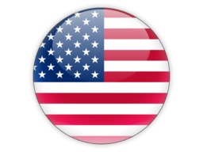
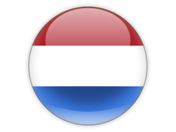
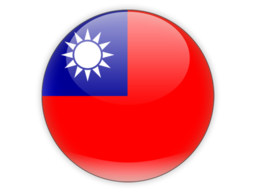
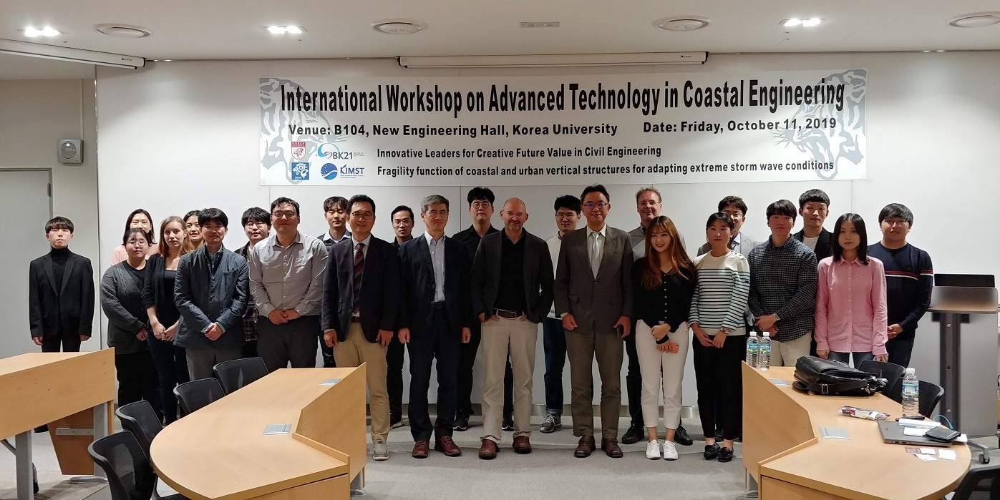
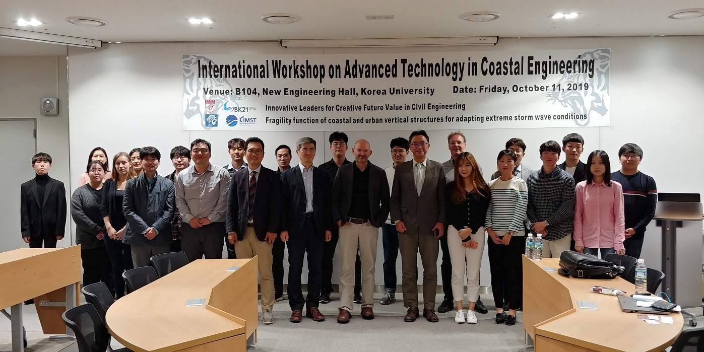

Welcome to Coastal Hydrodynamics Lab. at KU
Research Interests
Our research interests are basically towards a better understanding of coastal hydrodynamic processes which tend to be highly complex and turbulence-dominant due to a variety of physical factors, for example, irregular geometry, wave breaking, pycnocline, thermocline, flow-structure interactions and natural extreme events in the nearshore area. Therefore, our works easily expand into coastal hazards and environmental impacts associated with coastal hydrodynamics. While the most of our works were done by numerical modelling, some of our researches also cover laboratory experiments and field observations to excel work performances. Engineering-focus projects such as measures for coastal erosions\storm surges\flooding\oil-spills are of particular interests since they require practical insights that Dr. Son had obtained through industrial experiences prior to joining Korea University. Find out more....
해안유체역학 연구실에서는 해안에서 나타나는 복잡한 흐름기인 현상들에 대하여 유체역학적 관점을 토대로 발생기구 및 변화과정을 이해하고 그러한 현상들이 환경에 미치는 영향에 대해 연구하고 있다. 최근 지구온난화와 해안지역의 인위적 개발에 따라 해안환경 역시 지속적으로 변화하고 있으며, 이와 맞물려 연안침식, 지진/폭풍해일에 의한 범람, 오염물질 유출 및 확산, 이안류 등 다양한 해안수리학적 현상들도 그 특성을 달리하며 발생하고 있다. 따라서 해안유체역학연구실에서는 이론적 해석, 수치모델링 및 수리실험기법을 통해 해역에서 파랑 및 조류 등에 의해 발생하는 다양한 수리현상의 발생기작을 환경의 지속변화에 초점을 맞추어 규명하고, 이를 바탕으로 해안현안들에 대한 효율적 대처방안을 연구한다. 이를 통해 해안환경의 보전과 재해경감 및 예방을 위한 해법을 강구하고, 방파제 등 구조물 설계의 기준을 제시할 수 있으며, 궁극적으로 해안의 지속가능한 안전환경 구축에 도움을 줄 것으로 기대한다.
Research Keywords: Coastal Hydrodynamics, Sediment Transport, Numerical Modelling(CFD), Tsunamis/Storm Surges, Turbulent Mixing in the Nearshore, Oil Spill Modelling
Announcements
New Ph.D/MS students! Coastal Hydrodynamics Lab. is seeking a new, motivated MS/Ph.D student who will work on research topics as nearshore hydrodynamics, coastal processes, coastal hazards(storm surges/tsunamis) and sediment transport. Please contact Dr.Son at sson(at)korea(dot)ac(dot)kr if you are interested.
KU Hydro-Engineering Catalogue available ! KU Hydro-Engineering Catalogue is now available for downloading. It is offered in Korean as of now, and English version will be provided soon. The catalogue contains all the informations on KU Hydro-Engineering such as what we are doing, how you can earn the degree, who have been a member and etc. We hope that this information help you get familiar with us. Click the thumbnail below to download it!

Special Issue on "Advances in Nearshore Hydrodynamics Research"
Journal of Marine Science and Engineering [IF 2.033] had published a Special Issue focusing on Advances in Nearshore Hydrodynamics Research. This issue was first proposed and handled by Dr. Son and totally 5 papers were published successfully.
International Workshop on Advanced Technology in Coastal Engineering We had successfully hold "International Workshop on Advanced Technology in Coastal Engineering" on Oct. 11, 2019 at Korea University. Prof. Patrick Lynett( Univ. of Southern California), Dr. Marcel van Gent( Deltares), Prof. Tso-Ren Wu( National Central University), Prof. Sungwon Shin(
 Hanyang Univ.) and Dr. Byoungjoon Na( Korea Univ.) gave talks on interesting front-line topics such as tsunami hazards, climate change adaptions, non-Newtonian flow modelling, wave breaking in the workshop.
Thanks all the participants!

Hanyang Univ.) and Dr. Byoungjoon Na( Korea Univ.) gave talks on interesting front-line topics such as tsunami hazards, climate change adaptions, non-Newtonian flow modelling, wave breaking in the workshop.
Thanks all the participants!

Teaching Schedule (Past and Current)
2021S : ACEE 228 – Fluid Mechanics and Lab., ACE 635 – Computational Hydraulics
17F : ACE 832 – Tidal and Coastline Hydraulics
16S, 18S : ACE 635 – Computational Hydraulics
17S, 19F : ACE 564 – Hydrodynamics
15F, 16F, 17F, 18F, 19F, 20F : ACEE 338 – Coastal and Harbor Engineering
16S, 17S, 18S, 20S : ACEE 228 – Fluid Mechanics and Lab.
15F, 16F, 17F, 18F, 19F, 20F : EGRN 151 – Computer Language and Lab.
19S : on leave